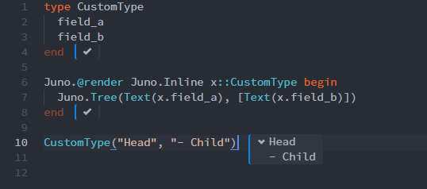

Information for Package Developers
In this page we giving some information that can help Package developers interact smoothly with Juno, and use it to their advantage for e.g. displaying Types, graphics etc.
Custom Type Printing
As was mentioned in the Basic Usage page, you can enhance the way user-defined types are printed in the Juno console (or similarly during inline evaluation). Note: The difference between printing in Juno and in the REPL is discussed in the follow-up section.
This enhancing is done by extending the Juno.render(::MyType) function to match your type.
Juno.render
Juno.@renderAs an example, we will use the type
struct System{T}
d::Int
state::Vector{T}
vel::Vector{T}
end
s = System(2, rand(2), rand(2))which, by default is displayed in Juno using a Juno.Tree structure, with the "head" displaying the Type information, and expandable arrows for all the fields that are expandable, meaning, the head itself, as well as the 2nd and 3rd fields, which are vectors.
The most basic way to change this, is to simply add some custom strings to Juno.render like:
import Juno.render
function Juno.render(i::Juno.Inline, s::System)
str = "$(s.d)-dimensional system"
Juno.render(i, Text(str))
endand then, this will change the way Juno displays the system to simply: "2-dimensional system". It is important to have the first argument i::Juno.Inline in your definition, instead of some println() function call, because this ensures that the information is shown correctly either at the console or on inline evaluation (with e.g. Shift+Enter at the editor).
Juno.Inline is one of the predefined rendering contexts defined in Juno:
Juno.Inline
Juno.Clipboard
Juno.PlotPaneHowever, with this approach you lose the cool interactivity of Juno allowing you to expand fields as you like. Let's say that you would like to keep the Juno display format, but simply change the message displayed on the "head", because for example you might not want the type information to be displayed. This is done by changing the "head" of the Juno.Tree that is created by default:
function Juno.render(i::Juno.Inline, s::System)
t = Juno.render(i, Juno.defaultrepr(s))
t[:head] = Juno.render(i, Text("$(length(s.state))-dimensional system"))
t
endJuno.defaultreprBut now you notice that you display the dimension information both at the "head" of the tree, but also on one of the "children", since by default all fields of a Type are printed. Well, thankfully, it is really easy to remove a children from display:
function Juno.render(i::Juno.Inline, s::System)
t = Juno.render(i, Juno.defaultrepr(s))
t[:head] = Juno.render(i, Text("$(length(s.state))-dimensional system"))
t[:children ] = t[:children][2:3]
return t
end
Here, each entry in the vector t[:children] is one displayed entity of the Juno.Tree. By removing the first entry (which is the first field of our Type) we are now displaying only the fields state and vel. Of course, it goes without saying that you can completely change how the fields are displayed (e.g. change the vel display to velocity) by going deeper into t[:children].
It's also possible to display arbitrary HTML in results: There are render methods for all the HTML primitives defined in Hiccup.jl as well as for certain higher-level elements from Juno.jl or even Base
Juno.Tree
Juno.LazyTree
Juno.SubTree
Juno.Link
Juno.Table
Juno.Row
Base.TextShould you wish to render something in the PlotPane, you can get it's dimensions via
Juno.plotsize — Function.plotsize()Get the size of Juno's plot pane in px. Does not yet have a fallback for other environments.
Printing in REPL vs. Juno
If a method for Base.show is present, but no method exists for Juno.render, then Juno will fall back to show. If both exist however, you can get the awesome display capabilities of Juno, while still having custom support for your Types in the REPL. For example, by adding the function:
import Base.show
function Base.show(io::IO, s::System)
println(io, "$(length(s.state))-dimensional system")
println(io, "state: $(s.state)")
println(io, "velocity $(s.vel)")
endyou can support custom printing at the REPL as well, without ruining the Juno printing.
Conditionally defining Juno-specific render methods
It is possible to use Requires.jl to circumvent having a hard dependency on Juno.jl for rendering:
@require Juno begin
using Juno
function Juno.render(i::Juno.Inline, s::System)
t = Juno.render(i, Juno.defaultrepr(s))
t[:head] = Juno.render(i, Text("$(length(s.state))-dimensional system"))
t[:children] = t[:children][2:3]
return t
end
end